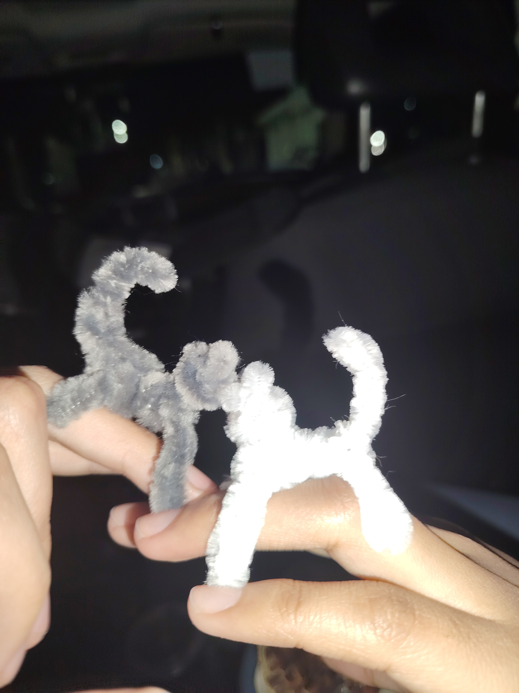

Hola amor, mi princesita linda,
Quería escribirte esto para que lo leas con calma, donde sea que estés. Te extraño, Angy, te extraño de verdad. A pesar de la distancia que hay entre nosotros, quiero que sepas que siempre quiero hablar contigo, que estoy pensando en ti y que no eh dejado de hacerlo que no sales de mi mente y no sale de mi mente el estar contigo y hablar contigo, el verte y estar cerca de ti y que de alguna manera estoy ahí, a tu lado, aunque no pueda estar físicamente contigo, sabes que en todo momento te acompaño y mi corazón siempre estará para ti.
Te quiero mucho, muchísimo, mi noviecita. Eres todo para mí. Lo único que quiero es verte, estar contigo, abrazarte y decirte en persona todo esto que ahora te escribo. Mientras tanto, siempre piensa y recuerda que te quiero y que eres lo más importante para mí, quédate con esta carta y con la certeza de que mi cariño no tiene distancia que lo detenga.
Eres mi todo, mi amor. Te quiero con toda mi alma.